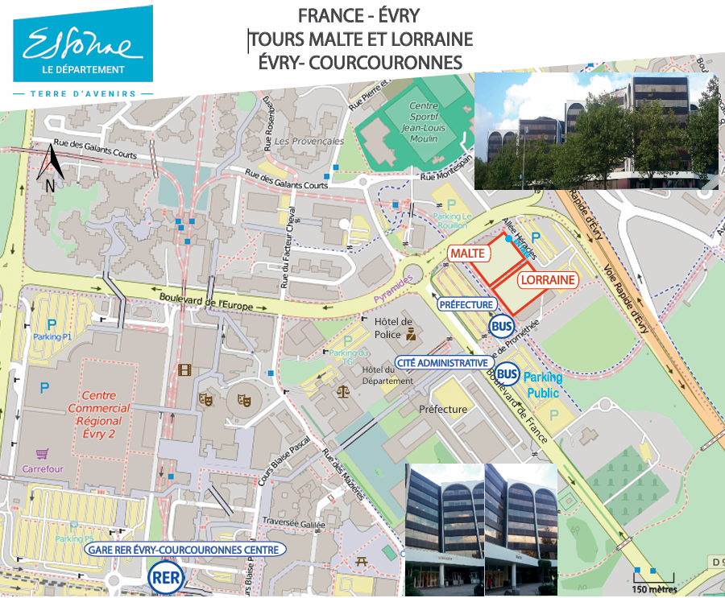

Vue d'ensemble du stage
Entreprise
Conseil Départemental de l'Essonne
Évry-Courcouronnes, France
Durée
5 mois
Janvier 2025 - Mai 2025
Technologies
PHP, CakePHP 3.5/4.5
Ligne de commande Linux
Mission principale
Maintenance corrective et évolutive de l'application de gestion de la relation entre les associations d'Essonne et les instituts de formations. Cette mission comprenait également la refonte complète d'une seconde application.
Contexte du projet
L'application FormAssO permet aux associations de l'Essonne de trouver et de s'inscrire à des formations proposées par différents instituts partenaires. Mon rôle était de moderniser cette plateforme et d'y ajouter de nouvelles fonctionnalités.
L'une des deux applications sur lesquelles j'ai travaillé était hébergée sur une machine virtuelle Linux, accessible uniquement via SSH. De ce fait, l'environnement de travail était entièrement en ligne de commande, ce qui m'a obligé à effectuer toutes les opérations à distance sans interface graphique.
Localisation du stage
Évry-Courcouronnes
Département : Essonne (91)
Région : Île-de-France
Distance de Paris : ~30 km au sud
Accès : RER D, ligne directe depuis Paris

Localisation des locaux à Évry-Courcouronnes
Tâches accomplies
Maintenance corrective
- Correction de bugs critiques sur l'application existante
- Optimisation des performances de la base de données
- Résolution de problèmes de compatibilité
Migration CakePHP
- Migration de CakePHP 3.5 vers 4.5
- Refactorisation du code
- Tests de régression complets
Compétences développées
Techniques
- Maîtrise de CakePHP
- système Linux (environnement uniquement sous ligne de commande)
Professionnelles
- Collaboration avec les utilisateurs finaux
- Compréhension des besoins métier
Résultats obtenus
Migration réussie vers CakePHP 4.5 de 2 applications web
Amélioration & sécurisation de la base de données